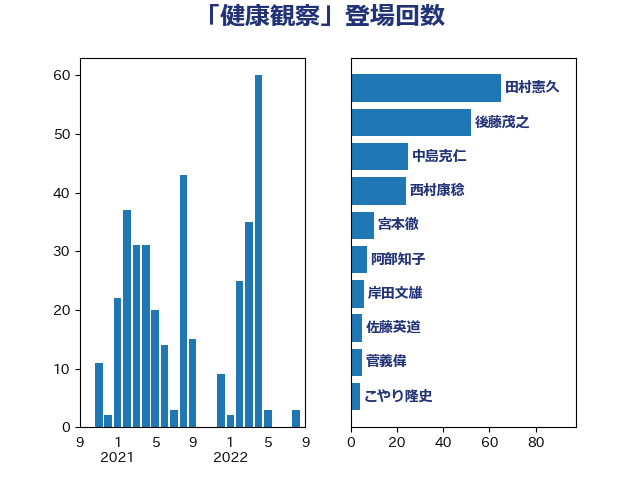

単語「健康観察」

| 田村憲久 | 自由民主党 | 65 回 |
| 後藤茂之 | 自由民主党 | 52 回 |
| 中島克仁 | 立憲民主党 | 25 回 |
| 西村康稔 | 自由民主党 | 24 回 |
| 宮本徹 | 日本共産党 | 10 回 |
| 阿部知子 | 立憲民主党 | 7 回 |
| 岸田文雄 | 自由民主党 | 6 回 |
| 佐藤英道 | 公明党 | 5 回 |
| 菅義偉 | 自由民主党 | 5 回 |
| こやり隆史 | 自由民主党 | 4 回 |
| 山本博司 | 公明党 | 4 回 |
| 山際大志郎 | 自由民主党 | 4 回 |
| 末松信介 | 自由民主党 | 4 回 |
| 伊藤孝恵 | 国民民主党 | 3 回 |
| 打越さく良 | 立憲民主党 | 3 回 |
| 石井啓一 | 公明党 | 3 回 |
| 石井苗子 | 日本維新の会 | 3 回 |
| 野間健 | 立憲民主党 | 3 回 |
| 高木かおり | 日本維新の会 | 3 回 |
| 伊佐進一 | 公明党 | 2 回 |
| 佐藤正久 | 自由民主党 | 2 回 |
| 柴田巧 | 日本維新の会 | 2 回 |
| 熊谷裕人 | 立憲民主党 | 2 回 |
| 石川香織 | 立憲民主党 | 2 回 |
| 重徳和彦 | 立憲民主党 | 2 回 |
| 吉田忠智 | 立憲民主党 | 1 回 |
| 塩田博昭 | 公明党 | 1 回 |
| 宮本岳志 | 日本共産党 | 1 回 |
| 山田勝彦 | 立憲民主党 | 1 回 |
| 岡本あき子 | 立憲民主党 | 1 回 |
| 東徹 | 日本維新の会 | 1 回 |
| 松野博一 | 自由民主党 | 1 回 |
| 柳本顕 | 自由民主党 | 1 回 |
| 梅村聡 | 日本維新の会 | 1 回 |
| 森屋隆 | 立憲民主党 | 1 回 |
| 横沢高徳 | 立憲民主党 | 1 回 |
| 江田憲司 | 立憲民主党 | 1 回 |
| 河野太郎 | 自由民主党 | 1 回 |
| 浅野哲 | 国民民主党 | 1 回 |
| 田中健 | 国民民主党 | 1 回 |
| 田村智子 | 日本共産党 | 1 回 |
| 石垣のりこ | 立憲民主党 | 1 回 |
| 竹谷とし子 | 公明党 | 1 回 |
| 篠原孝 | 立憲民主党 | 1 回 |
| 谷田川元 | 立憲民主党 | 1 回 |
| 赤羽一嘉 | 公明党 | 1 回 |
| 野上浩太郎 | 自由民主党 | 1 回 |
| 金村龍那 | 日本維新の会 | 1 回 |
| 鈴木俊一 | 自由民主党 | 1 回 |
| 長友慎治 | 国民民主党 | 1 回 |
| 馬場伸幸 | 日本維新の会 | 1 回 |